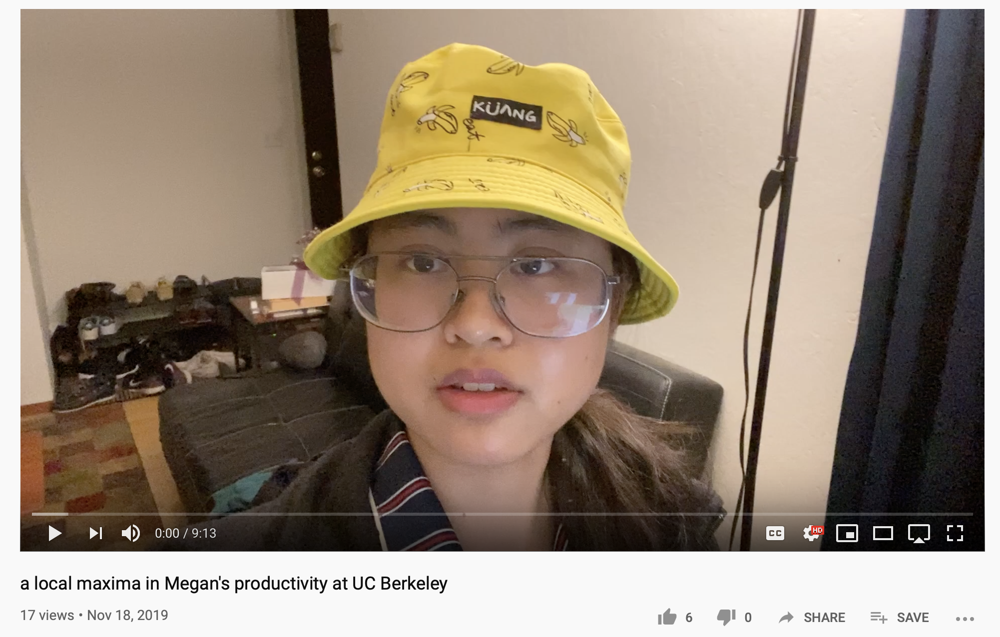

YouTube Channel
Megan Amber
I decided to create a YouTube channel because I wanted to get out of my comfort zone and express myself in a creative way. A lot of the times people in college or in a rigorous academic environment adopt a verious serious mannerism, so I have been trying to take a more comedic approach to my videos. I have also found that it has been great practice with speaking and growing more comfortable with myself.
